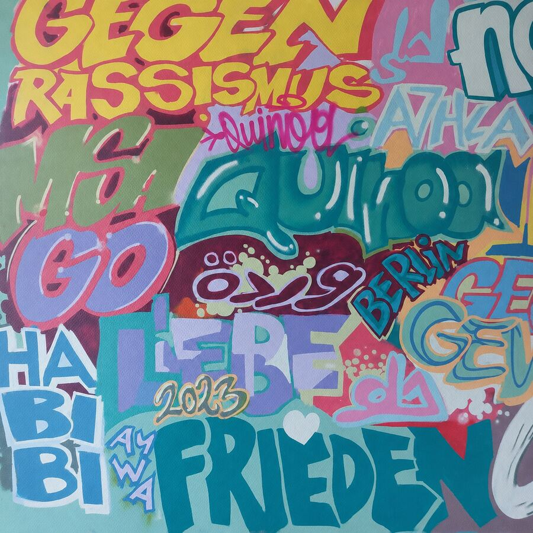

TEPPICH
ARCHIV · SACHBÜCHER

✉
✧
AUSGANG
Q
QUINOA · BIBLIOTHEKDAS VERSCHLOSSENE ARCHIV
Untersuche die Bibliothek. Jeder Gegenstand könnte wichtig sein.
Klicke auf Gegenstände, um sie genauer zu betrachten · ESC schließt Fenster
EIN ESCAPE-ROOM-ERLEBNIS
Die verschlossene
Bibliothek
Nach der letzten Ausleihe fällt die Tür ins Schloss. Im Archiv liegen verstreute Spuren. Finde heraus, wie sie zusammengehören – du entscheidest, wo du anfängst.
◈ Frei erkunden◈ Logisch kombinieren◈ Ohne Zeitdruck